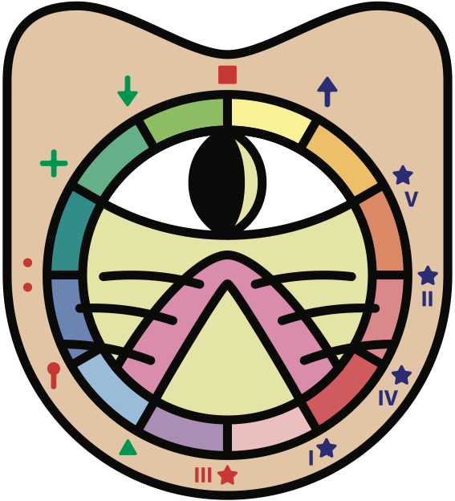

01 / ESCUCHA
El oído como centro
Antes de explicar, escuchamos. Antes de repetir, comprendemos el pulso y la relación.
Fractal Music World es un universo educativo y creativo nacido del Sistema Fractal: una forma de comprender la música desde el cuerpo, la naturaleza, el número, la memoria y la imaginación.

No enseñamos música como una fila de datos. La volvemos experiencia, arquitectura, juego y lenguaje vivo.
Fractal Music World une educación artística, ciencia, filosofía, etnomatemática y tradición musical para acompañar a cada persona en el descubrimiento de su propio sonido.
El método transforma conceptos abstractos en relaciones visibles, audibles y corporales.
Antes de explicar, escuchamos. Antes de repetir, comprendemos el pulso y la relación.
Intervalos, proporciones y estructuras aparecen como formas que pueden recorrerse.
Cartas, juegos, personajes y composición convierten el conocimiento en experiencia activa.
Astrolabio musical y puerta geométrica del Sistema Fractal. Organiza relaciones, proporciones y recorridos del lenguaje musical.
Un sistema narrativo y musical donde cada carta activa una función, una escucha y una forma distinta de comprender.
Música, geometría y ficción en una fuga narrativa. La obra literaria que abre las puertas del universo Fractal Music World.
El universo convertido en sonido: composición, personajes, memoria latinoamericana y arquitectura musical.
Creador del Sistema Fractal y del universo Fractal Music World. Su trabajo integra música, pedagogía, geometría, narración y experiencia escénica.
Estructura, gestión y sostén estratégico del proyecto. Traduce la visión creativa en organización, continuidad y desarrollo.
Fractal Music World desarrolla experiencias educativas, artísticas, editoriales y musicales para personas, instituciones y aliados.